R and Python Fundamentals 2: Data Frames, the Tidyverse and Figures
2026-11-02
The course book goes deeper on everything in this lecture. Read before or after class:
|> and pivot_longer()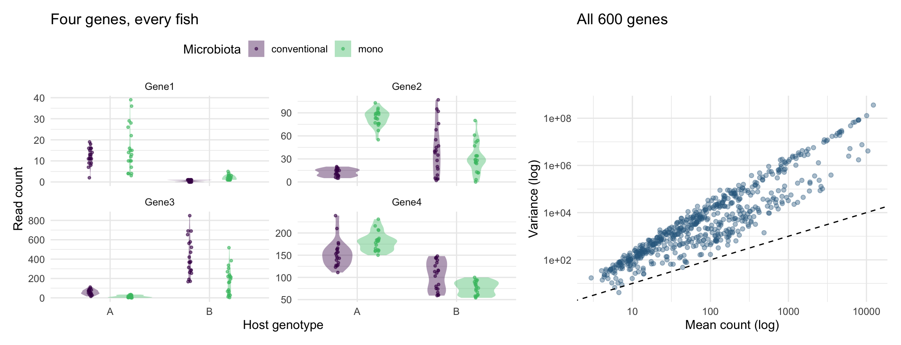
Figure 1: Left: four genes, every fish, split by genotype and microbiota. Right: mean vs. variance for all 600 genes at once. About 20 lines of R, starting from the raw TSV.
| Job | R | Python |
|---|---|---|
| Read a table | read.delim("data/f.tsv", check.names = FALSE) |
pd.read_csv("f.tsv", sep="\t") |
| Write results | write.csv(x, "results/f.csv", row.names = FALSE) |
x.to_csv("f.csv", index=False) |
| Save a figure | ggsave("results/fig.svg") · svg() … dev.off() |
plt.savefig("results/fig.svg") |
| One column / rows by condition | df$col · df[df$g == "A", ] |
df["col"] · df[df["g"] == "A"] |
results/; never overwrite anything in data/ (raw data is read-only).svg, .pdf) scale forever - use them for papers; raster (.png) needs 300 dpiimport pandas as pd); it has the same idea - rows are samples, columns are variablescolumn name: valuesmydata = pd.DataFrame({"hydrogel_concentration": hydrogel_concentration,
"compression": compression,
"conductivity": conductivity})
mydata.index = [f"Sample_{i}" for i in range(1, 9)] # row names = the index
mydata.head(3)
# hydrogel_concentration compression conductivity
# Sample_1 low 3.4 0.0
# Sample_2 high 3.4 9.2
# Sample_3 high 8.4 3.8[1] 80 604 Individual Genotype Microbiota Geno&Micro Gene1 Gene2 Gene3
1 AC1 A conventional convA 16 15 71
2 AC2 A conventional convA 7 6 72
3 AC3 A conventional convA 9 8 22
4 AC4 A conventional convA 8 18 15
conventional mono
A 20 20
B 20 20 Min. 1st Qu. Median Mean 3rd Qu. Max.
0.000 1.000 3.500 7.675 12.250 39.000 aggregate()’s formula - response ~ groups - is exactly the formula boxplot() uses, next slidegroup_by() |> summarize() and pandas’ .groupby().agg() generalize this to many statistics at once - coming up in a few slidesr* family - rnorm(), runif(), rpois(), rbinom() - draws random numbers from named distributions; set.seed() makes them reproducible (numpy: rng = np.random.default_rng(2026))set.seed(2026); n <- 2000
par(mfrow = c(2, 2), mar = c(4, 4, 2, 1)) # a 2 x 2 grid of panels
hist(rnorm(n, 50, 10), breaks = 40, col = "#440154", border = "white",
main = "Normal(50, 10)", xlab = "value")
hist(runif(n, 0, 100), breaks = 40, col = "#31688e", border = "white",
main = "Uniform(0, 100)", xlab = "value")
hist(rpois(n, 5), breaks = seq(-0.5, 20.5, 1), col = "#35b779",
border = "white", main = "Poisson(5)", xlab = "count")
hist(rbinom(n, 20, 0.3), breaks = seq(-0.5, 20.5, 1), col = "#fde725",
border = "white", main = "Binomial(20, 0.3)", xlab = "successes")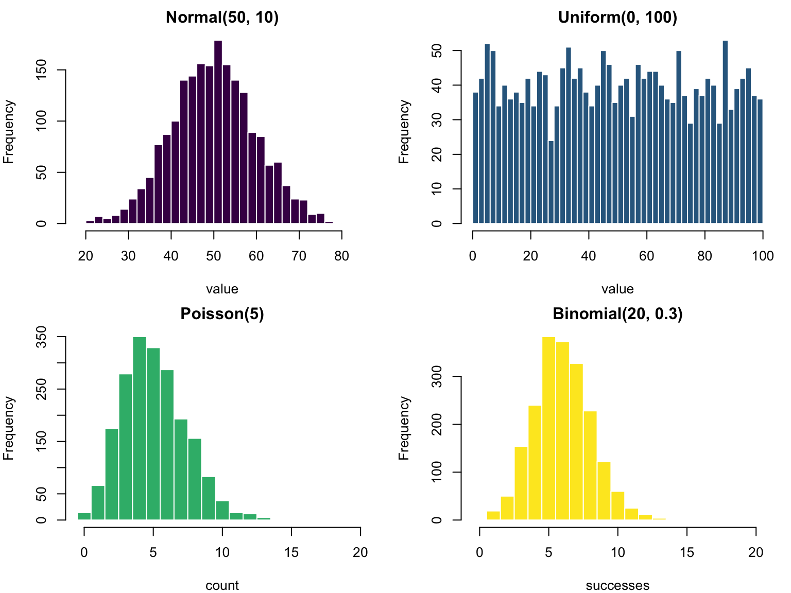
n = 2000
draws = {"Normal(50, 10)": rng.normal(50, 10, n),
"Uniform(0, 100)": rng.uniform(0, 100, n),
"Poisson(5)": rng.poisson(5, n),
"Binomial(20, 0.3)": rng.binomial(20, 0.3, n)}
fig, ax = plt.subplots(2, 2, figsize=(8, 6)) # the grid, as an array of axes
for a, (name, d), c in zip(ax.flat, draws.items(),
["#440154", "#31688e", "#35b779", "#fde725"]):
a.hist(d, bins=40, color=c, edgecolor="white")
a.set_title(name)
fig.tight_layout()
plt.show()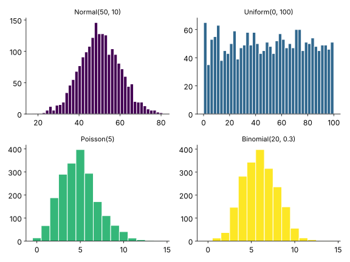
par(mfrow = c(2, 2)) splits the plotting device into panels; each high-level call fills the next one (plt.subplots(2, 2) hands Python the grid as an array of axes)n, the parameters and breaks - this one figure is a little simulation lab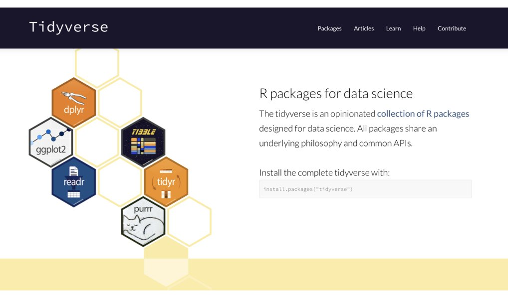
| Package | Purpose | pandas / Python equivalent |
|---|---|---|
dplyr |
Data manipulation (filter, select, mutate, summarise) |
pandas methods |
ggplot2 |
Data visualization | matplotlib, seaborn, plotnine |
tidyr |
Reshaping data (pivot_longer, pivot_wider, separate) |
melt, pivot |
readr |
Fast reading of CSV, TSV files | pd.read_csv |
stringr |
String manipulation | str methods, re |
purrr |
Functional programming tools (map) |
list comprehensions |
Loading tidyverse loads all of these at once (plus tibble and forcats).
|>| Verb | What it does |
|---|---|
filter() |
Keep rows matching a condition |
select() |
Keep or drop columns |
mutate() |
Add or change columns |
arrange() |
Sort rows |
group_by() + summarise() |
Summaries per group |
| dplyr verb | pandas method |
|---|---|
filter() |
.query("...") or df[df.col > 4] |
select() |
df[["a", "b"]] / .drop(columns=) |
mutate() |
.assign(new=...) |
arrange() |
.sort_values("col") |
group_by() + summarise() |
.groupby("col").agg(...) |
Note
Read |> as “and then”. The older %>% pipe does the same thing. In pandas the dot does the same job - wrap the chain in ( ) so you can put each step on its own line.
library(tidyverse)
stickle <- read_tsv("../Data_Folder/Stickle_RNAseq.tsv", show_col_types = FALSE) |>
rename(geno_micro = `Geno&Micro`) # fix the awkward name once
stickle_long <- stickle |>
pivot_longer(starts_with("Gene"), names_to = "gene", values_to = "count")
stickle_long # 80 x 600 = 48,000 rows: one per fish x gene# A tibble: 48,000 × 6
Individual Genotype Microbiota geno_micro gene count
<chr> <chr> <chr> <chr> <chr> <dbl>
1 AC1 A conventional convA Gene1 16
2 AC1 A conventional convA Gene2 15
3 AC1 A conventional convA Gene3 71
4 AC1 A conventional convA Gene4 153
5 AC1 A conventional convA Gene5 2
6 AC1 A conventional convA Gene6 11
7 AC1 A conventional convA Gene7 9
8 AC1 A conventional convA Gene8 11
9 AC1 A conventional convA Gene9 540
10 AC1 A conventional convA Gene10 104
# ℹ 47,990 more rows# A tibble: 4 × 4
gene Genotype Microbiota mean_count
<chr> <chr> <chr> <dbl>
1 Gene1 A conventional 12.1
2 Gene1 A mono 15.8
3 Gene1 B conventional 0.6
4 Gene1 B mono 2.15import pandas as pd
stickle = pd.read_csv("../Data_Folder/Stickle_RNAseq.tsv", sep="\t")
stickle_long = stickle.melt( # melt = pivot_longer
id_vars=["Individual", "Genotype", "Microbiota", "Geno&Micro"],
var_name="gene", value_name="count")
stickle_long.shape
# (48000, 6) - one row per fish x gene
gene_means = (stickle_long
.groupby(["gene", "Genotype", "Microbiota"], as_index=False)
.agg(mean_count=("count", "mean")))
gene_means.query("gene == 'Gene1'")Tip
Same data, two eras: awk gave us one gene’s mean per group in Week 4; one pivot_longer() / .melt() now unlocks every gene at once. This is the payoff of tidy, long-format data.
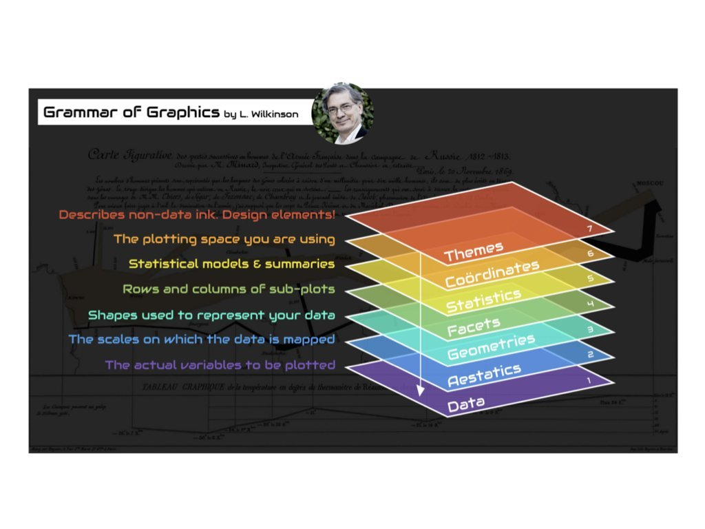
ggplot(data, aes(...)) declares the mapping: which column drives which visual channelgeom_jitter() is geom_point() plus sideways noise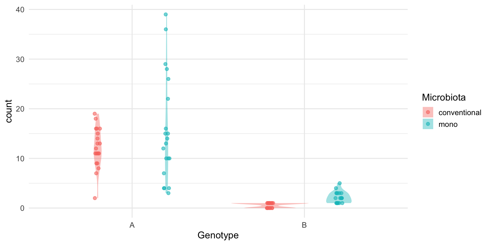
fill / color (hue in seaborn) splits the groups and builds the legend - automatically, from the dataposition_dodge places the two microbiota groups side by sidestickle_long |>
filter(gene %in% paste0("Gene", 1:4)) |>
ggplot(aes(Genotype, count, fill = Microbiota)) +
geom_violin(alpha = 0.4, color = NA, position = position_dodge(0.8)) +
geom_point(aes(color = Microbiota), alpha = 0.6, size = 1.2,
position = position_jitterdodge(jitter.width = 0.08, dodge.width = 0.8)) +
scale_fill_viridis_d(end = 0.7) + scale_color_viridis_d(end = 0.7) +
facet_wrap(~ gene, scales = "free_y") +
labs(x = "Host genotype", y = "Read count",
title = "Stickleback gut RNA-seq",
subtitle = "Each point is one fish; violins show the full distribution") +
theme_minimal(base_size = 14) + theme(legend.position = "top")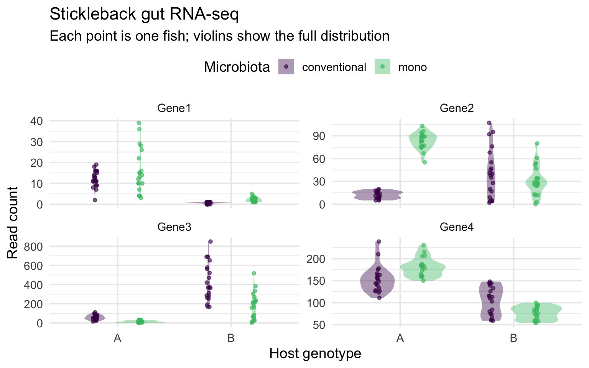
long4 = stickle_long[stickle_long["gene"].isin([f"Gene{i}" for i in range(1, 5)])]
g = sns.catplot(data=long4, x="Genotype", y="count", hue="Microbiota",
col="gene", col_wrap=2, kind="violin", inner="point",
palette=["#440154", "#35b779"], sharey=False, height=2.6, aspect=1.3)
g.set_axis_labels("Host genotype", "Read count")
g.set_titles("{col_name}")
g.figure.suptitle("Stickleback gut RNA-seq", y=1.02)
plt.show()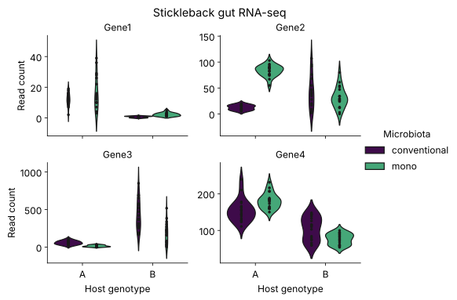
facet_wrap(~ gene) - one panel per gene, for free; scales = "free_y" lets each gene keep its own axisggplot2 geoms| Geom | Purpose | Data type | seaborn equivalent |
|---|---|---|---|
geom_point() |
Scatterplots | Two continuous | sns.scatterplot() |
geom_line() |
Line plots | Continuous over ordered | sns.lineplot() |
geom_bar() |
Bar charts | Categorical counts | sns.countplot() |
geom_histogram() |
Histograms | Single continuous | sns.histplot() |
geom_boxplot() |
Boxplots | Continuous by category | sns.boxplot() |
geom_smooth() |
Trend lines | Two continuous | sns.regplot() |
Tip
facet_wrap(~ group) splits any plot into one panel per group, and ggsave("figure.pdf") writes the last plot to a file. Data-visualization mechanics get a full chapter in the course book.
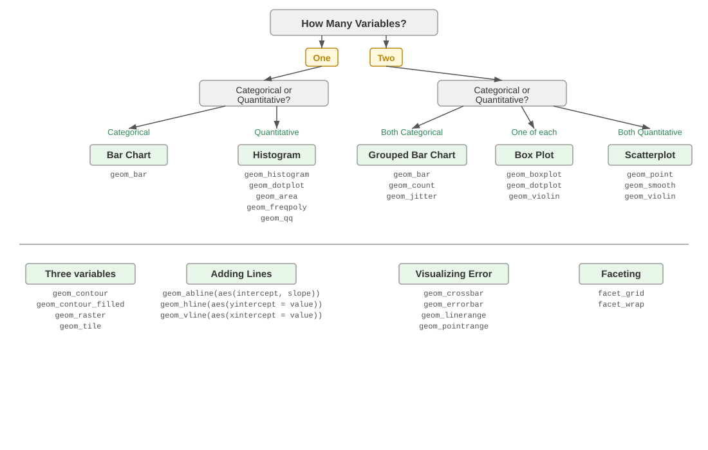
Start from the question and the type of data you have
stickle_long |>
group_by(gene) |>
summarize(mean = mean(count), var = var(count)) |>
ggplot(aes(mean, var)) +
geom_point(alpha = 0.4, color = "#31688e") +
geom_abline(slope = 1, intercept = 0, linetype = "dashed") +
geom_smooth(se = FALSE, color = "#440154") +
scale_x_log10() + scale_y_log10() +
labs(x = "Mean count per gene (log)", y = "Variance (log)",
title = "All 600 genes at once",
subtitle = "Dashed line: variance = mean (Poisson). Real RNA-seq runs hotter.") +
theme_minimal(base_size = 14)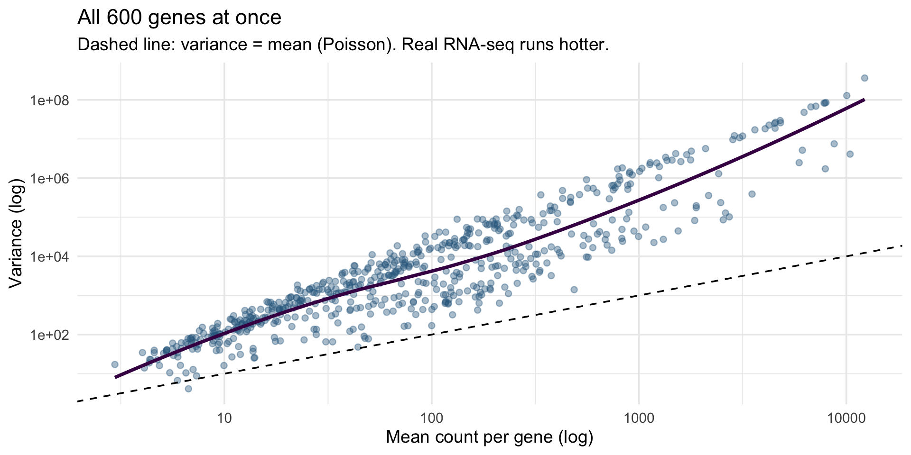
import numpy as np
genes = [c for c in stickle.columns if c.startswith("Gene")]
mv = pd.DataFrame({"mean": stickle[genes].mean(), "var": stickle[genes].var()})
fig, ax = plt.subplots()
ax.scatter(mv["mean"], mv["var"], s=10, alpha=0.4, color="#31688e")
lims = np.array([mv["mean"].min() / 2, mv["mean"].max() * 2])
ax.plot(lims, lims, ls="--", color="black") # variance = mean
ax.set(xscale="log", yscale="log",
xlabel="Mean count per gene (log)", ylabel="Variance (log)",
title="All 600 genes at once")
plt.show()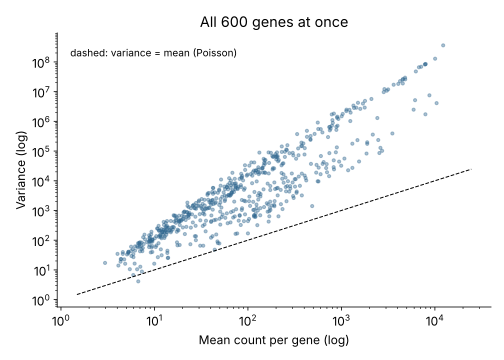
group_by(gene) |> summarize() collapses 48,000 rows to 600 - one point per gene| Figure | The question it answers | R | Python |
|---|---|---|---|
| Clustered heatmap + dendrograms | which samples / genes behave alike? | heatmap() |
sns.clustermap() |
| Time course with ribbons | how do trajectories differ, and how noisy are they? | geom_ribbon() + geom_line() |
plt.fill_between() |
| Dose-response curve | where is the IC50? | geom_point() + geom_smooth(), log-x |
plt.semilogx() |
| PCA scores plot | what structures 600 dimensions? | prcomp() + geom_point() |
sklearn PCA + scatter |
| Violin + jitter | what does the whole distribution look like, by group? | geom_violin() |
sns.violinplot() |
set.seed(2026)
expr <- matrix(rnorm(30 * 12, mean = 8, sd = 0.4), nrow = 30) +
rnorm(30) # a baseline level per gene
expr[1:15, 7:12] <- expr[1:15, 7:12] + 2 # module 1: up in treated
expr[16:30, 7:12] <- expr[16:30, 7:12] - 1.5 # module 2: down in treated
rownames(expr) <- paste0("gene_", 1:30)
colnames(expr) <- c(paste0("ctrl_", 1:6), paste0("treat_", 1:6))
heatmap(expr, scale = "row", col = hcl.colors(50, "viridis"), margins = c(6, 5))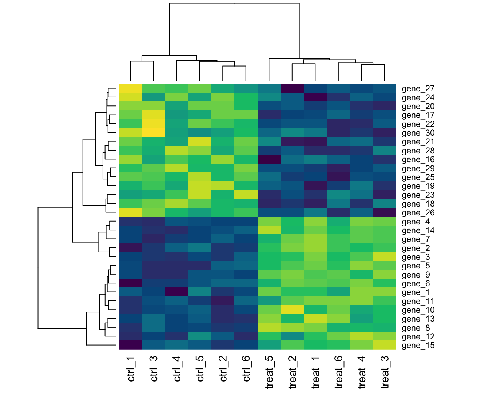
expr = pd.DataFrame(
rng.normal(8, 0.4, size=(30, 12)) + rng.normal(0, 1, size=(30, 1)),
index=[f"gene_{i+1}" for i in range(30)],
columns=[f"ctrl_{i+1}" for i in range(6)] + [f"treat_{i+1}" for i in range(6)])
expr.iloc[:15, 6:] += 2.0 # module 1: up in treated
expr.iloc[15:, 6:] -= 1.5 # module 2: down in treated
sns.clustermap(expr, z_score=0, cmap="viridis", figsize=(7, 6))
plt.show()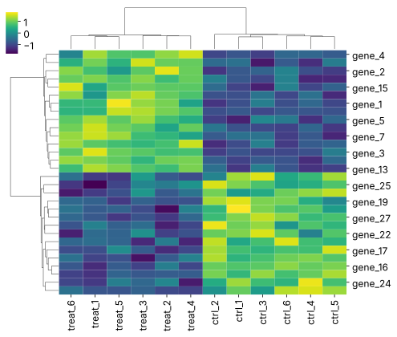
scale = "row" / z_score=0 standardizes each gene, so the colors compare patterns, not absolute levelspheatmap, ComplexHeatmapparams <- tibble(strain = c("wild type", "mutant A", "mutant B"),
K = c(1.8, 1.2, 1.6), # carrying capacity
r = c(0.25, 0.35, 0.15)) # growth rate
growth <- expand_grid(params, rep = 1:4, time = seq(0, 48, by = 2)) |>
mutate(od = K / (1 + exp(-r * (time - 20))) + rnorm(n(), sd = 0.05))
growth |>
group_by(strain, time) |>
summarize(mean = mean(od), sd = sd(od), .groups = "drop") |>
ggplot(aes(time, mean, color = strain, fill = strain)) +
geom_ribbon(aes(ymin = mean - sd, ymax = mean + sd), alpha = 0.25, color = NA) +
geom_line(linewidth = 1) +
scale_color_viridis_d(end = 0.8) + scale_fill_viridis_d(end = 0.8) +
labs(x = "Time (h)", y = "OD600",
title = "Bioreactor growth curves (mean ± SD of 4 replicates)") +
theme_minimal(base_size = 14)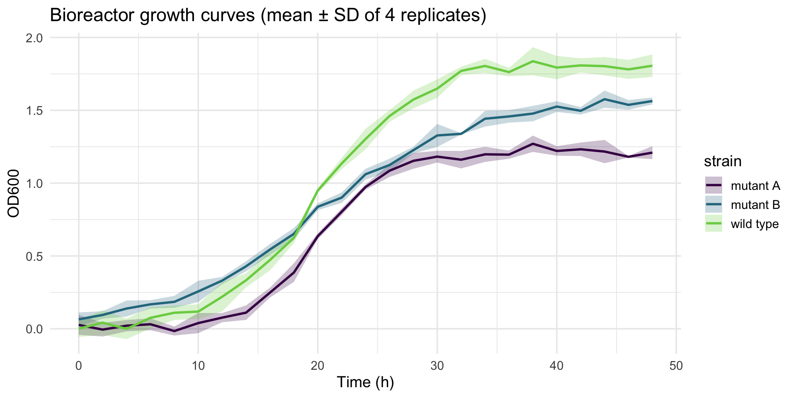
t = np.arange(0, 49, 2)
strains = {"wild type": (1.8, 0.25), "mutant A": (1.2, 0.35), "mutant B": (1.6, 0.15)}
fig, ax = plt.subplots()
for (name, (K, r)), c in zip(strains.items(), ["#440154", "#31688e", "#35b779"]):
reps = np.array([K / (1 + np.exp(-r * (t - 20))) + rng.normal(0, 0.05, len(t))
for _ in range(4)])
m, s = reps.mean(axis=0), reps.std(axis=0)
ax.plot(t, m, color=c, lw=2, label=name)
ax.fill_between(t, m - s, m + s, color=c, alpha=0.25)
ax.set(xlabel="Time (h)", ylabel="OD600")
ax.legend()
plt.show()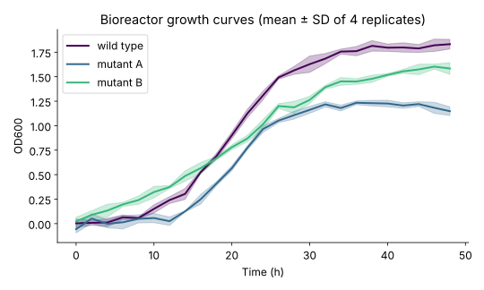
group_by() |> summarize() + ribbon pattern works for any repeated time course: sensor logs, qPCR curves, cyclic loading of a hydrogelrnorm() noisedr <- expand_grid(tibble(compound = c("compound X", "compound Y"),
ic50 = c(3e-7, 5e-6)),
rep = 1:3,
dose = 10^seq(-9, -4, length.out = 8)) |>
mutate(viability = 100 / (1 + (dose / ic50)^1.2) + rnorm(n(), sd = 4))
ggplot(dr, aes(dose, viability, color = compound)) +
geom_point(alpha = 0.7, size = 2) +
geom_smooth(se = FALSE) +
scale_x_log10() +
scale_color_viridis_d(end = 0.6) +
labs(x = "Dose (M)", y = "Viability (%)",
title = "Dose-response: two compounds, three replicates") +
theme_minimal(base_size = 14)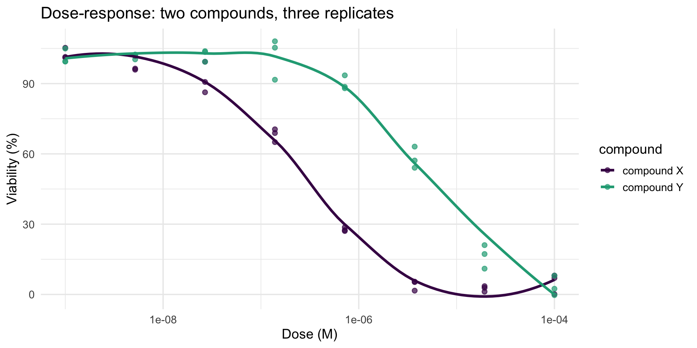
dose = np.logspace(-9, -4, 8)
fig, ax = plt.subplots()
for (name, ic50), c in zip({"compound X": 3e-7, "compound Y": 5e-6}.items(),
["#440154", "#35b779"]):
for _ in range(3):
viab = 100 / (1 + (dose / ic50) ** 1.2) + rng.normal(0, 4, len(dose))
ax.scatter(dose, viab, s=18, alpha=0.6, color=c)
grid = np.logspace(-9, -4, 200)
ax.plot(grid, 100 / (1 + (grid / ic50) ** 1.2), color=c, lw=2, label=name)
ax.set(xscale="log", xlabel="Dose (M)", ylabel="Viability (%)")
ax.legend()
plt.show()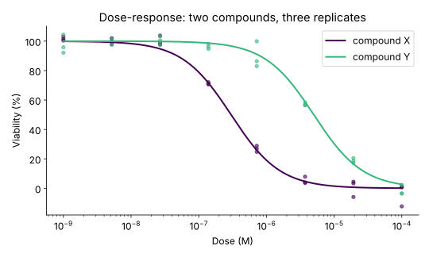
scale_x_log10() / xscale="log") is what makes dose-response curves readable - doses span five orders of magnitudegeom_smooth() draws a data-driven trend; a real assay would fit a four-parameter logistic model (coming in the statistics sequence)gene_mat <- stickle |> select(starts_with("Gene"))
pca <- prcomp(log1p(gene_mat), scale. = TRUE) # log1p tames the counts
bind_cols(as_tibble(pca$x[, 1:2]),
stickle |> select(geno_micro)) |>
ggplot(aes(PC1, PC2, color = geno_micro)) +
geom_point(size = 2.5, alpha = 0.8) +
scale_color_viridis_d(name = "Group") +
labs(title = "PCA: 80 fish from 600 genes",
subtitle = "Distance between points = overall expression similarity") +
theme_minimal(base_size = 14)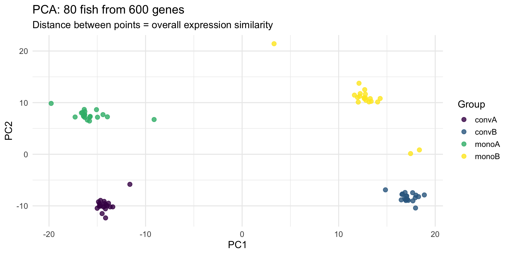
from sklearn.decomposition import PCA
X = np.log1p(stickle[genes].to_numpy())
X = (X - X.mean(axis=0)) / X.std(axis=0) # like scale. = TRUE
scores = PCA(n_components=2).fit_transform(X)
fig, ax = plt.subplots()
for grp, c in zip(sorted(stickle["Geno&Micro"].unique()),
["#440154", "#31688e", "#35b779", "#fde725"]):
sel = stickle["Geno&Micro"] == grp
ax.scatter(scores[sel, 0], scores[sel, 1], s=30, alpha=0.8, color=c, label=grp)
ax.set(xlabel="PC1", ylabel="PC2", title="PCA of 80 fish from 600 genes")
ax.legend(title="Group")
plt.show()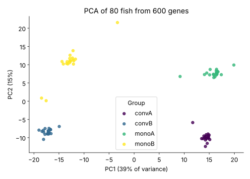
prcomp() call plus one ggplot() call; the groups separate because the biology is realscripts/summarize_stickleback.R or .py that reads data/Stickle_RNAseq.tsv, writes a per-group median table for a gene of your choice to results/, and saves the distribution gallery as results/distributions.svg and a 300-dpi PNGggsave() / savefig() it into results/scale = "row" matters!)Working versions of both scripts are on the Examples page - but only look after your own runs.
The lecture built the spine; these carry the rest. All of it is on the Examples page and in the book - budget a couple of hours before next Monday:
| Topic | Where it lives |
|---|---|
| Reading & writing files, saving figures, in full | Part-1 notebooks §1-3 · Ch. 11/Ch. 12 |
| Random draws, honest density overlays, base graphics | Part-1 notebooks §4-7 |
Control flow: if, for, while - and when a vector beats a loop |
Part-2 notebooks §4-6 · Parisa’s s2-s4 · Ch. 11/12 |
Logical operators and membership (%in% / .isin()) |
Part-2 notebooks §3 |
| Inspecting objects, common gotchas, reading error messages | Part-2 notebooks §2, §17-18 · Ch. 11/12 |
| Writing your own functions | Ch. 15 · Parisa’s s4 |
Lecture06_*_dataframes_figures.ipynb) and part-2 notebooks (Lecture06_*_tidyverse_ggplot.ipynb) come in matched R/Python pairs - run them side by sidesummary(), table(), aggregate() / .describe(), pd.crosstab(), .groupby() answer the first questionsrnorm(), runif(), rpois(), rbinom() / numpy’s rng.* - data-generating machines for testing ideaspivot_longer() / .melt() turns 600 gene columns into one analyzable column - the single most useful move in this courseggsave() writes the fileBioE Computational Tools 2026 - Knight Campus